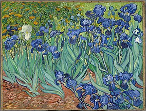
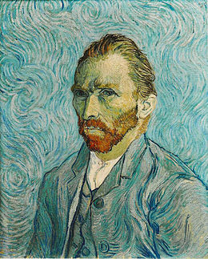

LE OPERE PIÙ CELEBRI DI VAN GOGH

Vincent Van Gogh,Notte stellata,1889

Vincent Van Gogh,La camera di Vincent ad Arles,1888

Vincent Van Gogh,Iris,1889

Vincent Van Gogh,I mangiatori di patate,1885

Vincent Van Gogh,Notte stellata sul Rodano,1888

Vincent Van Gogh,La casa gialla,1888

Vincent Van Gogh,Ramo di mandorle in fiore,1890

Vincent Van Gogh,Campo di grano con voli di corvo,1890

Vincent Van Gogh,Autoritratto,1889

Vincent Van Gogh,La chiesa di Auvers,1890

Vincent Van Gogh,Autoritratto con orecchio bendato,1888

Vincent Van Gogh,I girasoli,1888-1889

Vincent Van Gogh,Terrazza del caffè la sera, Place du Forum, Arles, 1888